Data = read.table("wine.txt",header=TRUE)Correction du TP2 - Statistique avec R
ModIA - 4ème année - 2025-2026
Ce TP se décompose en deux parties indépendantes :
Partie 1 : elle est consacrée aux notions de statistiques descriptives uni- et bi-dimensionnelles.
Partie 2 : elle est consacrée à l’illustration de notions de statistique inférentielle paramétrique revues dans les séances de remise à niveau. On n’abordera ici que le cas gaussien.
Remarque : pensez à enlever les “eval: false” au fur et à mesure de l’avancement dans le TP dans la partie 2 pour avoir les résultats dans votre compte-rendu final de TP.
1 Statistiques descriptives
Cette section s’appuie sur la partie 3 du tutoriel. Avant de commencer ce TP, vous devez avoir fait la partie ggplot2() du TP1 et/ou avoir lu la présentation de ggplot2 du tutoriel 4.
1.1 Récupération du jeu de données
On va étudier le jeu de données wine disponible sur la page moodle du cours. Commencez par récupérer ce jeu de données et sauvegardez le fichier dans votre dossier de travail.
Le jeu de données wine comprend des mesures physico-chimiques réalisées sur un échantillon de \(600\) vins (rouges et blancs) du Portugal. Ces mesures sont complétées par une évaluation sensorielle de la qualité par un ensemble d’experts. Chaque vin est décrit par les variables suivantes :
- Qualite : son évaluation sensorielle par les experts (“bad”,“medium”,“good”),
- Type : son type (1 pour un vin rouge, 0 pour un vin blanc),
- AcidVol : la teneur en acide volatile (en g/dm3 d’acide acétique),
- AcidCitr : la teneur en acide citrique (en g/dm3),
- SO2lbr : le dosage du dioxyde de soufre libre (en mg/dm3),
- SO2tot : le dosage du dioxyde de soufre total (en mg/dm3),
- Densite : la densité (en g/cm3),
- Alcool : le degré d’alcool (en % Vol.).
Dans un premier temps, commencez par charger le jeu de données à l’aide de la fonction read.table().
Vous pouvez voir les premières lignes du jeu de données :
head(Data) Qualite Type AcidVol AcidCitr SO2lbr SO2tot Densite Alcool
1352 medium 1 0.62 0.01 8 46 0.99332 11.8
5493 medium 0 0.34 0.10 17 63 0.99370 9.2
5153 medium 0 0.22 0.22 39 110 0.99855 9.0
5308 medium 0 0.35 0.46 61 183 0.99786 9.0
3866 medium 0 0.42 0.32 20 167 0.99479 10.6
694 medium 1 0.48 0.32 21 122 0.99840 9.4Le jeu de données contient 600 individus (correspondant aux 600 lignes) décrits par 8 variables (correspondant aux 8 colonnes).
Remarquons que l’on peut obtenir les noms des variables grâce à la commande names(Data). Plus largement, on peut utiliser la commande attributes() :
attributes(Data)$names
[1] "Qualite" "Type" "AcidVol" "AcidCitr" "SO2lbr" "SO2tot" "Densite"
[8] "Alcool"
$class
[1] "data.frame"
$row.names
[1] "1352" "5493" "5153" "5308" "3866" "694" "5085" "2280" "5231" "4388"
[11] "4172" "4763" "4001" "3244" "4663" "3256" "3444" "3867" "3161" "6420"
[21] "1590" "2155" "2258" "209" "4560" "1981" "2166" "5430" "6496" "346"
[31] "1288" "3615" "1837" "5637" "2520" "3046" "2983" "840" "3185" "4690"
[41] "6347" "728" "240" "6318" "2501" "3003" "4537" "4799" "141" "3664"
[51] "5167" "5291" "3383" "2712" "449" "214" "3216" "4917" "5005" "3501"
[61] "1291" "3137" "998" "1350" "6336" "492" "3901" "4878" "5343" "5096"
[71] "4516" "1118" "2680" "452" "3937" "776" "528" "3445" "203" "1175"
[81] "5796" "2334" "3564" "1921" "4995" "1070" "5286" "4421" "5630" "273"
[91] "896" "5267" "742" "956" "4435" "414" "2737" "1496" "455" "3970"
[101] "286" "1535" "3144" "5473" "6308" "5051" "3502" "4286" "1408" "2581"
[111] "6225" "4614" "3065" "54" "6300" "2050" "5574" "3368" "2332" "4225"
[121] "5508" "2830" "5669" "6141" "6395" "5337" "878" "4190" "5778" "3316"
[131] "5832" "5672" "1786" "2654" "1199" "5997" "1347" "4785" "5400" "2157"
[141] "3552" "788" "2624" "1912" "499" "2522" "6456" "4425" "618" "1139"
[151] "5815" "1191" "1348" "771" "5530" "858" "4070" "5460" "4236" "5919"
[161] "6340" "5170" "3266" "3696" "6310" "6269" "3258" "6313" "362" "2374"
[171] "4507" "1575" "3468" "5729" "6469" "510" "6107" "1178" "4973" "4120"
[181] "5295" "2076" "3989" "4518" "3184" "1198" "1847" "2285" "6022" "6087"
[191] "113" "5667" "3317" "933" "4658" "1923" "4026" "2244" "226" "1254"
[201] "747" "2809" "1137" "2067" "2455" "6163" "3977" "50" "3418" "5477"
[211] "2389" "6243" "65" "3678" "3117" "4327" "4206" "1169" "4188" "5392"
[221] "1477" "3063" "6342" "4634" "3862" "1497" "193" "2273" "3074" "583"
[231] "6169" "3865" "5812" "2658" "4152" "753" "4000" "5504" "1861" "6068"
[241] "4950" "4654" "1511" "1001" "2386" "1242" "2045" "2743" "1413" "2060"
[251] "5915" "469" "5454" "4119" "397" "1278" "2307" "1279" "4528" "761"
[261] "3747" "199" "802" "4150" "271" "5070" "6303" "146" "3768" "4665"
[271] "2703" "5349" "1693" "1640" "5547" "354" "4161" "3230" "1319" "3832"
[281] "2894" "3282" "5782" "570" "5111" "6433" "229" "5419" "2174" "1749"
[291] "4782" "5163" "6059" "4836" "5635" "6054" "6437" "3347" "684" "48"
[301] "2117" "1224" "96" "4131" "2726" "2511" "6262" "3086" "1253" "4549"
[311] "723" "5287" "3739" "1658" "76" "1604" "149" "554" "349" "639"
[321] "416" "2966" "378" "475" "1212" "5670" "15" "4986" "324" "3657"
[331] "5571" "881" "322" "1998" "3795" "5064" "232" "5447" "2232" "5307"
[341] "3578" "4645" "6277" "6483" "1028" "5649" "1493" "52" "4329" "5765"
[351] "4927" "4871" "5099" "419" "2019" "3490" "5412" "4310" "2156" "4040"
[361] "4791" "6205" "1295" "4177" "2216" "6355" "4493" "4428" "3089" "2142"
[371] "4354" "5650" "2801" "2977" "919" "1951" "3641" "5697" "6452" "3271"
[381] "4515" "3665" "4167" "6008" "6094" "605" "5608" "2942" "2360" "4579"
[391] "4805" "239" "612" "4937" "3692" "4287" "2203" "1547" "5444" "872"
[401] "4513" "6280" "5050" "2226" "5135" "5278" "2570" "4509" "2732" "1820"
[411] "5495" "1882" "789" "4290" "1249" "3306" "5468" "2342" "2217" "1252"
[421] "1828" "832" "4529" "2750" "5511" "4111" "2200" "695" "611" "1916"
[431] "1646" "1774" "1977" "5298" "1007" "3956" "5659" "6" "1365" "619"
[441] "3131" "2941" "2027" "3838" "6039" "5624" "5323" "2730" "1783" "1579"
[451] "3397" "3685" "5180" "1741" "5219" "5103" "997" "1451" "2102" "309"
[461] "3508" "4429" "2320" "4943" "1236" "5285" "1622" "2865" "254" "581"
[471] "4635" "198" "5257" "5006" "2363" "922" "399" "3948" "2198" "5393"
[481] "4609" "5299" "2598" "1214" "5875" "3626" "4087" "783" "1482" "290"
[491] "5956" "3011" "2293" "6176" "3871" "5478" "1123" "319" "2469" "4151"
[501] "2395" "4073" "2072" "1762" "1775" "3325" "1560" "3769" "5755" "4011"
[511] "6389" "4958" "3523" "1452" "4576" "5182" "1179" "1059" "6467" "369"
[521] "5795" "1836" "1684" "1737" "988" "5853" "1201" "866" "110" "775"
[531] "5303" "1938" "1283" "5636" "1474" "3236" "2262" "2881" "892" "2032"
[541] "129" "6375" "1044" "540" "3219" "3183" "1895" "2631" "1354" "655"
[551] "4963" "3040" "4729" "6286" "5823" "4224" "729" "719" "5217" "3569"
[561] "1447" "1394" "4794" "1664" "501" "3668" "3098" "1080" "2266" "186"
[571] "5841" "3375" "1111" "430" "677" "3973" "6471" "1021" "3674" "6203"
[581] "2762" "572" "5960" "970" "460" "4630" "5655" "5365" "2020" "3275"
[591] "5150" "3265" "3328" "3925" "1265" "768" "670" "1156" "2275" "974" La commande str() affiche quand à elle d’autres informations concernant les données. En particulier, on retrouve le type (data.frame) et la dimension (nombres d’observations et de variables) des données. En outre, pour chaque variable, on peut lire son nom, son format (entier, numérique, caractère) ainsi que ses premières valeurs.
str(Data)'data.frame': 600 obs. of 8 variables:
$ Qualite : chr "medium" "medium" "medium" "medium" ...
$ Type : int 1 0 0 0 0 1 0 0 0 0 ...
$ AcidVol : num 0.62 0.34 0.22 0.35 0.42 0.48 0.21 0.28 0.3 0.4 ...
$ AcidCitr: num 0.01 0.1 0.22 0.46 0.32 0.32 0.32 0.14 0.25 0.42 ...
$ SO2lbr : num 8 17 39 61 20 21 39 64 21 41 ...
$ SO2tot : int 46 63 110 183 167 122 113 159 124 176 ...
$ Densite : num 0.993 0.994 0.999 0.998 0.995 ...
$ Alcool : num 11.8 9.2 9 9 10.6 9.4 10.2 10 10.8 9.4 ...On voit ici que les variables sont de différentes natures :
- Les variables Qualite et Type sont des variables qualitatives
- Les autres variables sont quantitatives
Attention à bien préciser à R les variables qui doivent être considérées comme qualitatives. Ici, on change donc la nature des variables Qualite et Type:
Data$Qualite=as.factor(Data$Qualite)
Data$Type=factor(Data$Type,labels=c("blanc","rouge"))
head(Data) Qualite Type AcidVol AcidCitr SO2lbr SO2tot Densite Alcool
1352 medium rouge 0.62 0.01 8 46 0.99332 11.8
5493 medium blanc 0.34 0.10 17 63 0.99370 9.2
5153 medium blanc 0.22 0.22 39 110 0.99855 9.0
5308 medium blanc 0.35 0.46 61 183 0.99786 9.0
3866 medium blanc 0.42 0.32 20 167 0.99479 10.6
694 medium rouge 0.48 0.32 21 122 0.99840 9.4On peut obtenir un résumé rapide du jeu de données à l’aide de la fonction summary()
summary(Data) Qualite Type AcidVol AcidCitr SO2lbr
bad : 19 blanc:425 Min. :0.1000 Min. :0.0000 Min. : 2.00
good :110 rouge:175 1st Qu.:0.2400 1st Qu.:0.2400 1st Qu.: 15.75
medium:471 Median :0.3000 Median :0.3000 Median : 27.00
Mean :0.3512 Mean :0.3141 Mean : 29.41
3rd Qu.:0.4300 3rd Qu.:0.3900 3rd Qu.: 41.00
Max. :1.0400 Max. :1.0000 Max. :112.00
SO2tot Densite Alcool
Min. : 7.0 Min. :0.9875 Min. : 8.00
1st Qu.: 68.0 1st Qu.:0.9925 1st Qu.: 9.50
Median :114.5 Median :0.9949 Median :10.40
Mean :111.2 Mean :0.9947 Mean :10.49
3rd Qu.:154.0 3rd Qu.:0.9970 3rd Qu.:11.30
Max. :278.0 Max. :1.0030 Max. :14.00 1.2 Statistiques descriptives unidimensionnelles
1.2.1 Variable qualitative
On considère ici une variable qualitative \(X\) dont on observe \(n\) réalisations \(\underline{x}=(x_1,x_2,\ldots,x_n)\). Cette variable prend \(K\) modalités \(m_1,\ldots,m_K\). Si les modalités n’ont pas d’ordre naturel, on parle de variable qualitative nominale (ex. Type), sinon c’est une variable qualitative ordinale (ex. Qualite).
La variable Type contient \(K=\) 2 modalités qui sont blanc, rouge.
levels(Data$Type)[1] "blanc" "rouge"On récupère l’effectif \(n_k=\underset{i=1}{\stackrel{n}{\sum}} \mathbb{1}_{x_i=m_k}\) pour chaque modalité \(m_k\) avec summary() ou table().
summary(Data$Type)blanc rouge
425 175 EffType = as.vector(table(Data$Type))
EffType[1] 425 175On utilise aussi les fréquences \(f_k=\frac{n_k}{n}\) donc \(\underset{k=1}{\stackrel{K}{\sum}} f_k=1\).
Freq = EffType/length(Data$Type)
knitr::kable(data.frame(modalite=levels(Data$Type),Eff=EffType,Freq=Freq), caption = 'Description de la variable Type',booktabs = TRUE,digits=3)| modalite | Eff | Freq |
|---|---|---|
| blanc | 425 | 0.708 |
| rouge | 175 | 0.292 |
Pour une variable qualitative ordinale, on utilise également les effectifs cumulés \(N_k=\underset{\ell=1}{\stackrel{k}{\sum}} n_\ell\) et les fréquences cumulées \(F_k=\underset{\ell=1}{\stackrel{k}{\sum}} f_\ell\).
Pour une variable qualitative, on utilise la représentation par camembert (pie) ou diagramme en bâton (barplot)
g1<-ggplot(Data, aes(x=Type))+
geom_bar()+
ylab("")+ggtitle("Effectifs")
g2<-ggplot(Data, aes(x = Type)) +
geom_bar(aes(y = (..count..)/sum(..count..)))+
ylab("")+ggtitle("Frequences")
quan <- as.vector(table(Data$Type))/nrow(Data)
df <- data.frame(group = levels(Data$Type),value = quan)
g3<-ggplot(df, aes(x="", y=value, fill=group))+
geom_bar(width = 1, stat = "identity")+
coord_polar("y", start=0)+
theme(legend.position="bottom")
grid.arrange(g3,g1,g2,ncol=3)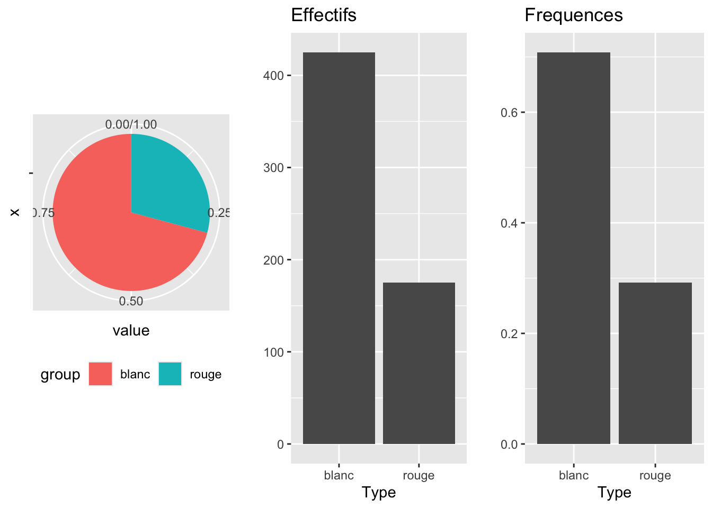
Pour une variable qualitative ordinale, on peut également tracer les fréquences cumulées :
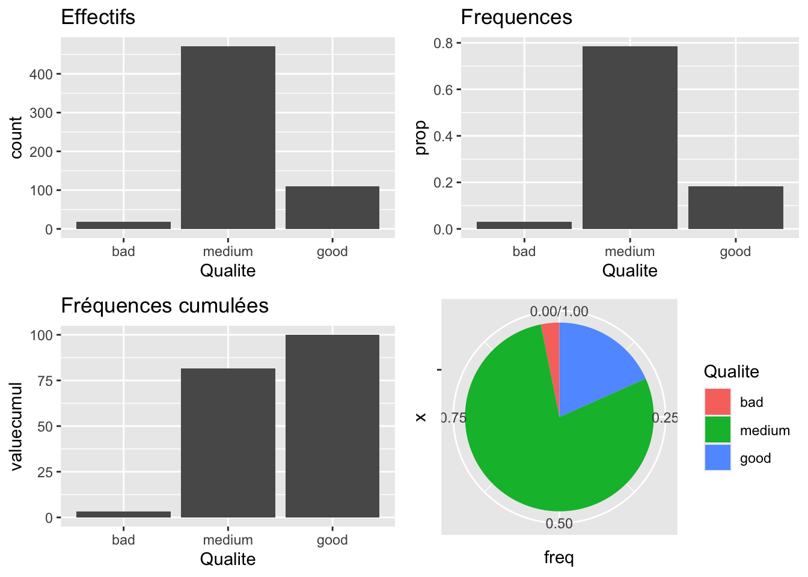
1.2.2 Variable quantitative
Nous allons ici nous intéresser à l’étude d’une variable quantitative \(X\) dont on a \(n\) observations \(\underline{x}=(x_1,\ldots,x_n)\). On va illustrer cette section avec la variable Alcool. Vous pouvez reprendre l’étude pour les autres variables quantitatives du jeu de données.
1.2.2.1 Indices statistiques
Nous rappelons les principaux indicateurs statistiques que l’on peut évaluer pour une série de mesures \(\underline{x}\) : la moyenne, la médiane, la variance, l’écart-type ….
La moyenne de \(\underline{x}\) : \(\bar{x} = \frac{1}{n} \sum_{i=1}^n x_i\)
mean(Data$Alcool)[1] 10.48592La variance \(s_x^2 = \frac{1}{n}\sum_{i=1}^n (x_i - \bar{x})^2\), la variance corrigée \(var(\underline{x})=\frac{1}{n-1}\sum_{i=1}^n (x_i - \bar{x})^2\) et l’écart-type corrigé \(\sqrt{var(\underline{x})}\). Attention les fonctions var() et sd() renvoient les valeurs corrigées de la variance et de l’écart-type respectivement.
var(Data$Alcool)[1] 1.316059sd(Data$Alcool)[1] 1.147196La commande range() renvoie respectivement le minimum et le maximum. On peut aussi utiliser min()et max()
range(Data$Alcool)[1] 8 14min(Data$Alcool)[1] 8max(Data$Alcool)[1] 14On peut alors récupérer l’étendue (\(max(\underline{x}) - min(\underline{x})\) ) avec le code suivant :
diff(range(Data$Alcool))[1] 6La médiane est une valeur qui divise l’échantillon en deux sous-échantillons de même cardinal : \(\sum_{i=1}^n \mathbb{1}_{x_i\geq m} \geq \frac{n}{2} \textrm{ et } \sum_{i=1}^n \mathbb{1}_{x_i\leq m} \geq \frac{n}{2}\)
median(Data$Alcool)[1] 10.4sort(Data$Alcool)[296:305] [1] 10.3 10.3 10.3 10.3 10.4 10.4 10.4 10.4 10.4 10.4La médiane est le deuxième des trois quartiles :
- le premier quartile \(q_{0.25}\) est une valeur qui sépare les 25\(\%\) des valeurs inférieures de l’échantillon du reste
- le deuxième quartile \(q_{0.5}\) est la médiane
- le troisième quartile \(q_{O.75}\) est une valeur qui sépare les 25% des valeurs supérieures de l’échantillon du reste. On retrouve ces valeurs dans la représentation par boxplot (voir plus bas).
Les quartiles sont des cas particuliers de la notion de quantile. Le \(\alpha\)-quantile empirique est défini par \(q_{\alpha} = x_{(i)}\) avec \(\alpha\in]\frac{i-1}{n}, \frac{i}{n}]\) où \(x_{(1)}\leq x_{(2)}\leq \ldots \leq x_{(n)}\) sont les valeurs ordonnées de la série statistique.
quantile(Data$Alcool) 0% 25% 50% 75% 100%
8.0 9.5 10.4 11.3 14.0 quantile(Data$Alcool,0.9) 90%
12.1 Pour calculer l’écart interquantile, il suffit de faire la différence entre les troisième et premier quantiles, à savoir
q.Alc <- quantile(x = Data$Alcool, probs=c(.25,.75), names=FALSE)
diff(q.Alc)[1] 1.8et les valeurs d’adjacence sont obtenues de la manière suivante :
L=q.Alc + diff(q.Alc) * c(-1.5,1.5) ; L[1] 6.8 14.0# valeur adjacente inférieure :
min(Data$Alcool[Data$Alcool>=L[1]])[1] 8# valeur adjacente supérieure :
max(Data$Alcool[Data$Alcool<=L[2]])[1] 14Par ailleurs, toutes ces informations sont stockées dans la commande summary() :
summary(Data$Alcool) Min. 1st Qu. Median Mean 3rd Qu. Max.
8.00 9.50 10.40 10.49 11.30 14.00 où sont affichés respectivement le minimum, le premier quartile, la médiane, la moyenne, le troisième quartile et le maximum.
1.2.2.2 Représentations graphiques
L’histogramme est une représentation graphique qui permet de visualiser la répartition d’une variable quantitative. Les valeurs sont regroupées en intervalles \(]a_k,a_{k+1}[\) et la hauteur associée est \(h_k=\frac{f_k}{a_{k+1} - a_k}\).
g1<-ggplot(Data,aes(x=Alcool))+
geom_histogram(bins=15,color="black", fill="white")+
ggtitle("Histo. des effectifs")+
ylab("Frequency")+xlab("Alcool")
g2<-ggplot(Data,aes(x=Alcool))+
geom_histogram(aes(y=..density..),bins=15,color="black", fill="white")+ggtitle("Histo. des frequences")+
ylab("Density")+xlab("Alcool")
grid.arrange(g1,g2,ncol=2)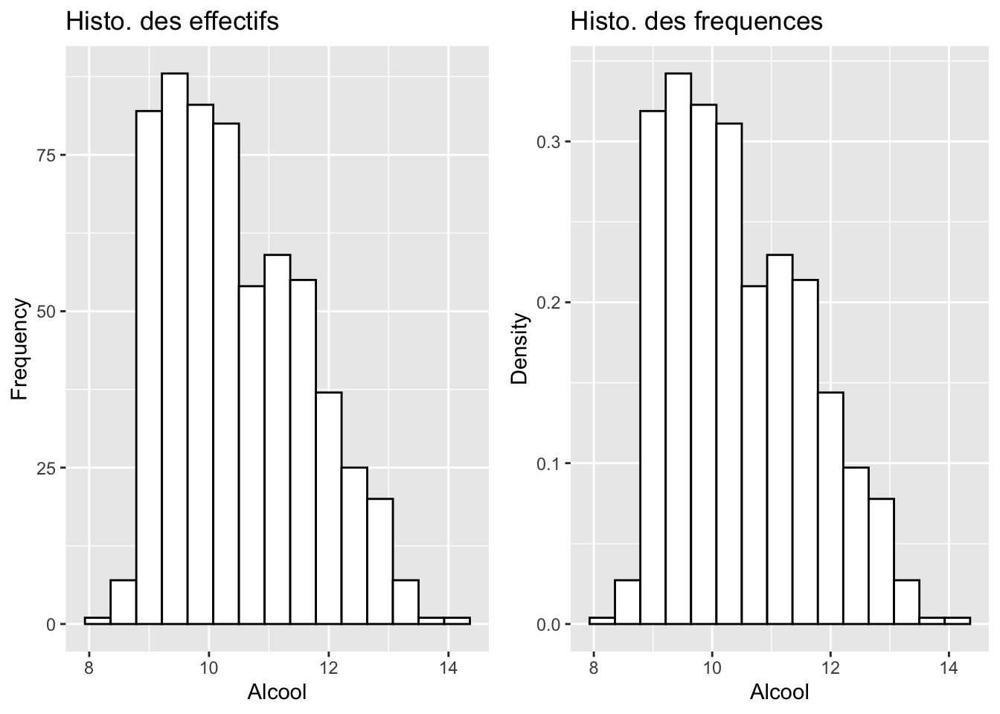
L’option breaks="Sturges" donne le choix par défaut de R pour le nombre de classes. D’autres options sont possibles (soit on précise les classes elles mêmes dans un vecteur, soit on précise un nombre arbitraire de classes, soit on lui précise l’algorithme pour calculer le nombre de classes parmi "Sturges", "Scott" ou "FD" pour Freedman-Diaconis). On peut récupérer les informations de construction de l’histogramme en stockant le résultat de hist() dans une variable :
H <- hist(Data$Alcool,plot=FALSE)
attributes(H)$names
[1] "breaks" "counts" "density" "mids" "xname" "equidist"
$class
[1] "histogram"H$breaks # les (K+1) bordures des classes [a_k,a_{k+1}]
H$counts # le nombre de points dans chaque classe
H$density # la hauteur des K classes
H$mids # le milieu des K classes
H$xname # le nom de la variable
H$equidist # découpage régulier La fonction de répartition empirique est la fonction en escalier définie par \(t\in\mathbb{R}\mapsto F_n(t) = \frac{1}{n} \sum_{i=1}^n \mathbb{1}_{x_i\leq t}\)
ggplot(Data, aes(Alcool)) +
stat_ecdf(geom = "step")+
xlab("Variable Alcool")+ylab("")+
ggtitle("Fonction de répartition empirique")+
geom_hline(yintercept=0, linetype="dashed")+
geom_hline(yintercept=1, linetype="dashed")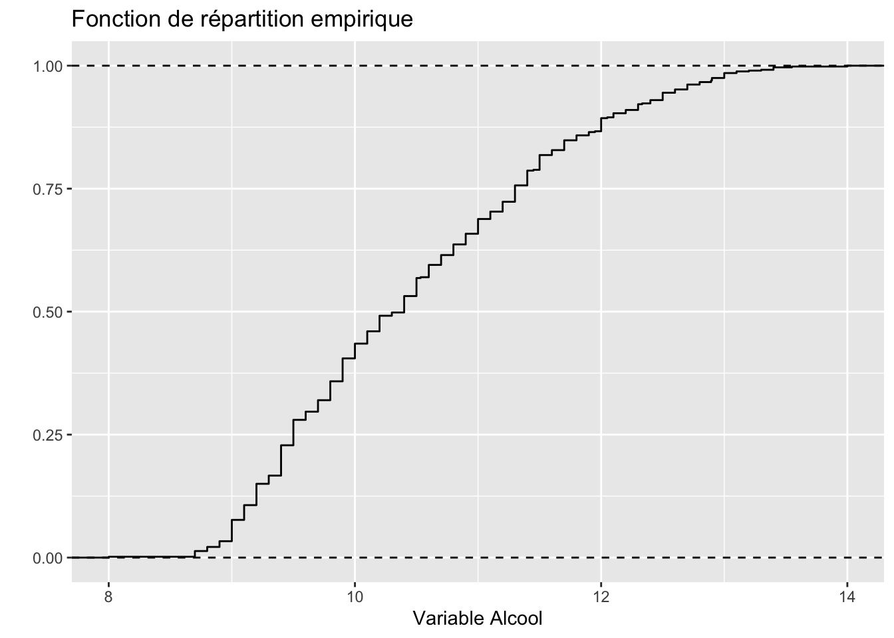
La boîte à moustaches est un graphique qui résume la série statistique à partir de ses valeurs extrêmes et ses quartiles. En effet, on retrouve sur cette représentation
- les quartiles
- la valeur adjacente supérieure \(v+\), qui est la plus grande valeur de l’échantillon inférieure ou égale à \(L+ = q_{0.75} + 1.5 (q _{0.75} − q_{0.25})\)
- la valeur adjacente inférieure \(v−\), qui est la plus petite valeur de l’échantillon supérieure ou égale à \(L− = q_{0.25} − 1.5 (q_{0.75} − q_{0.25})\)
- les valeurs extrêmes (outliers) qui sont les valeurs de l’échantillon n’appartenant pas à l’intervalle \([v−, v+]\).
Voici les boxplots pour les variables quantitatives de notre exemple.
library(reshape2)
Attaching package: 'reshape2'The following object is masked from 'package:tidyr':
smithsg1<-ggplot(melt(Data[,-c(1,2)]),aes(x=variable,y=value))+
geom_boxplot()No id variables; using all as measure variablesg1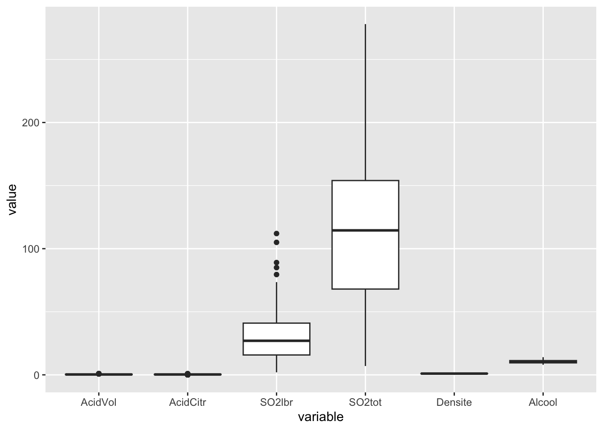
Nous allons pour la suite nous concentrer sur la variable SO2lbr. En plus du graphique, on peut récupérer de la fonction boxplot() différentes informations :
B <- boxplot(Data$SO2lbr,horizontal=TRUE)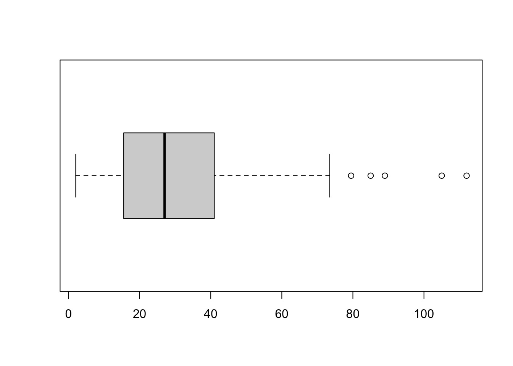
attributes(B)$names
[1] "stats" "n" "conf" "out" "group" "names"ggplot(Data,aes(y=SO2lbr))+
geom_boxplot()+
coord_flip()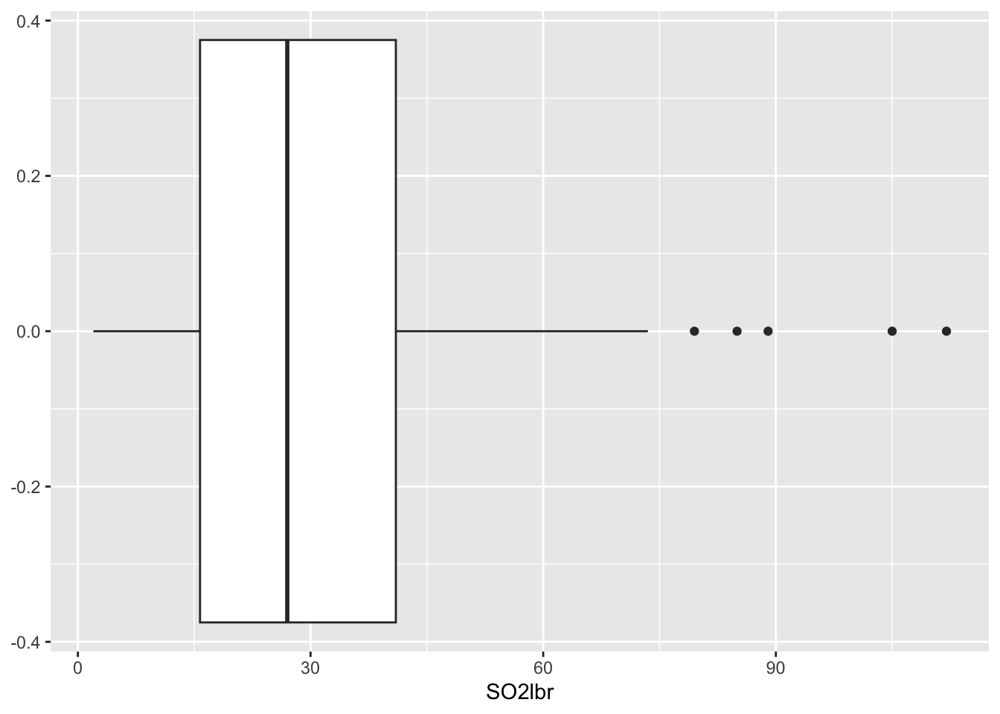
Dans B$stats, on retrouve les quartiles, la médiane et les valeurs adjacentes :
B$stats [,1]
[1,] 2.0
[2,] 15.5
[3,] 27.0
[4,] 41.0
[5,] 73.5median(Data$SO2lbr)[1] 27q <- quantile(x = Data$SO2lbr, probs=c(.25,.75), names=FALSE)
q[1] 15.75 41.00L=q + diff(q) * c(-1.5,1.5)
min(Data$SO2lbr[Data$SO2lbr>=L[1]])[1] 2max(Data$SO2lbr[Data$SO2lbr<=L[2]])[1] 73.5Dans B$out renvoie toutes les valeurs aberrantes (en dehors des barres inférieure et supérieure c’est à dire en dehors de l’intervalle \([v-,v+]\)):
B$out[1] 89.0 105.0 85.0 112.0 79.5Data$SO2lbr[which(Data$SO2lbr<B$stats[1] | Data$SO2lbr>B$stats[5])][1] 89.0 105.0 85.0 112.0 79.51.3 Statistiques descriptives bidimensionnelles
1.3.1 Entre 2 variables quantitatives
Supposons dans cette partie que X et Y sont deux variables quantitatives et on observe une série de \(n\) valeurs pour chacune : \(\underline{x}=(x_1,\ldots,x_n)\) et \(\underline{y}=(y_1,\ldots,y_n)\).
On peut tout d’abord représenter le nuage de points de coordonnées \((x_i,y_i)\) :
ggplot(Data,aes(x=Alcool,y=Densite))+
geom_point()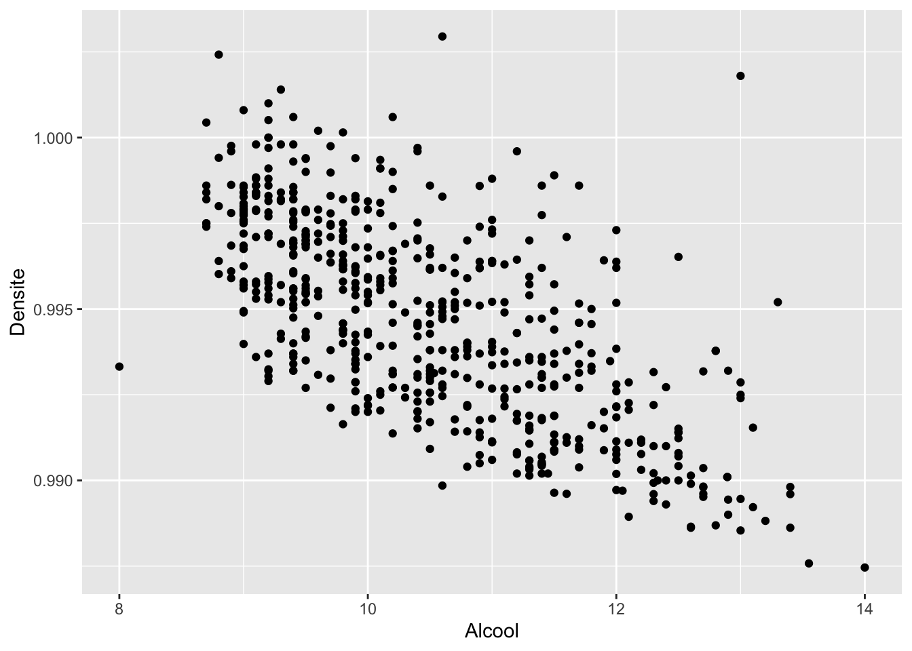
1.3.1.1 Corrélation
On peut calculer la covariance (généralisaton bidimensionnelle de la variance) entre ces deux séries de mesure à l’aide de la commande cov(): \[
Cov(\underline{x},\underline{y}) = \frac{1}{n} \sum_{i=1}^n (x_i-\bar{x}) (y_i -\bar{y}).
\] Mais la covariance dépendant des unités de mesure des deux variables considérées, on calcule plutôt la corrélation linéaire (renormalisation de la covariance par les écarts-type) qui appartient à l’intervalle \([-1,1]\) à l’aide de cor(): \[
cor(\underline{x},\underline{y}) = \frac{Cov(\underline{x},\underline{y})}{\sqrt{s_x^2\ \ s_y^2}}
\]
A l’aide de la fonction corrplot() (issue du package du même nom) on représente ici la matrice des corrélations entre les variables quantitatives de notre jeu de données:
corrplot(cor(Data[,-c(1:2)]),method="ellipse")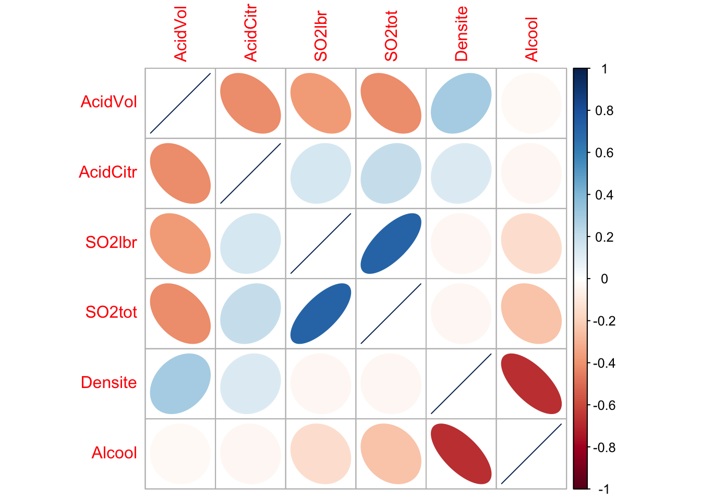
1.3.1.2 Régression linéaire
Le coefficient de corrélation linéaire entre les variables Densité et Alcool vaut -0.68. On peut vérifier que le nuage de points de ces deux variables s’aligner sur une droite de pente négative :
ggplot(Data,aes(x=Alcool,y=Densite))+
geom_point()+
geom_smooth(method=lm, se=FALSE)`geom_smooth()` using formula = 'y ~ x'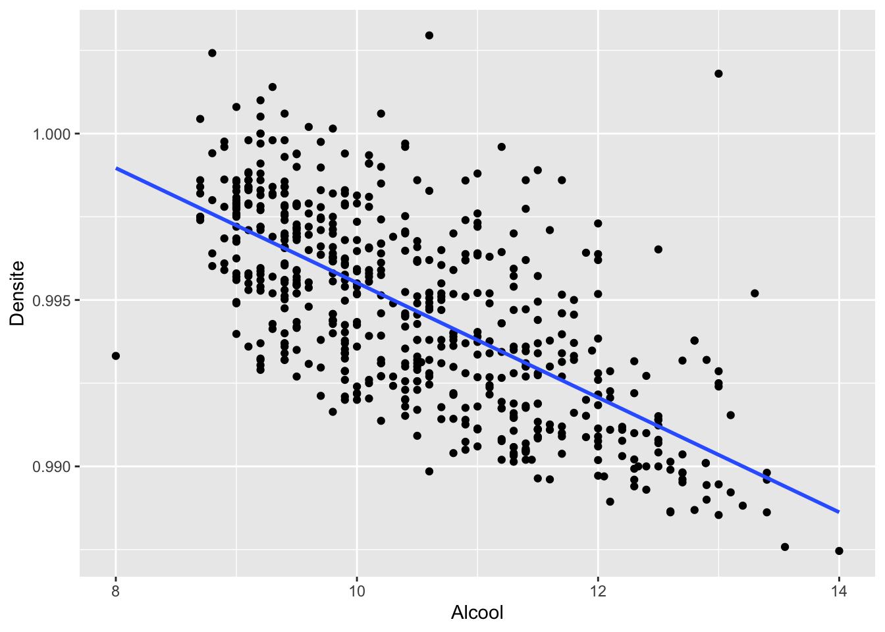
1.3.2 Entre une variable quantitative et une variable qualitative
Supposons dans cette partie que \(X\) est une variable qualitative prenant \(J\) modalités \(m_1, \ldots, m_J\) et \(Y\) une variable quantitative. On observe une série de \(n\) valeurs pour chacune : \(\underline{x}=(x_1,\ldots,x_n)\) et \(\underline{y}=(y_1,\ldots,y_n)\).
On note \(C_j=\{i\in\{1,\ldots,n\}; x_i=m_j\}\) l’ensemble des individus prenant la modalité \(m_j\) et \(n_j\) son cardinal.
La moyenne de \(\underline{y}\) peut alors se décomposer en une moyenne pondérée des moyennes de \(y\) conditionnellement aux modalités de \(X\) : \[ \bar{y} = \frac{1}{n} \sum_{j=1}^J n_j\ \bar{y}_{[j]} \textrm{ avec } \bar{y}_{[j]} = \frac{1}{n_j} \sum_{i\in C_j} y_i \] De même la variance se décompose en \(s_y^2 = \underbrace{s_{y,E}^2}_{\textrm{variance inter-classe}} + \underbrace{s_{y,R}^2}_{\textrm{variance intra-classe}}\) avec
\[ s_{y,E}^2 = \frac{1}{n} \sum_{j=1}^J n_j\ (\bar{y}_{[j]} - \bar{y})^2 \] et \[ s_{y,R}^2 = \frac{1}{n} \sum_{j=1}^J n_j\ s_{y,[j]}^2 \textrm{ avec } s^2_{y,[j]} = \frac{1}{n_j}\sum_{i\in C_j} (y_i - \bar{y}_{[j]})^2 \] On peut alors définir le rapport de corrélation \[ \rho_{y|x} = \sqrt{\frac{s_{y,E}^2}{s_{y}^2}} = \sqrt{1 - \frac{s_{y,R}^2}{s_{y}^2}}\in[0,1]. \] Plus \(\rho_{y|x}\) est proche de \(0\), plus \(s_{y,E}^2\) est proche de 0 et donc moins la variable qualitative \(X\) a d’influence sur la variable quantitative \(Y\).
Graphiquement, on peut représenter la distribution de la variable quantitative conditionnellement aux modalités de la variable qualitative pour visualiser la liaison potentielle entre les deux variables.
g1<-ggplot(Data,aes(x=Qualite,y=Alcool))+
geom_boxplot()
g2<-ggplot(Data,aes(x=Type,y=Alcool))+
geom_boxplot()
grid.arrange(g1,g2,ncol=2)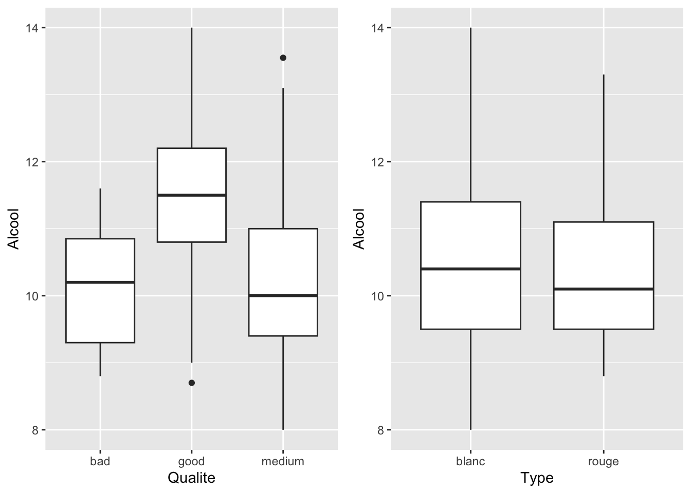
1.3.3 Entre deux variables qualitatives
Supposons dans cette partie que \(X\) est une variable qualitative prenant \(J\) modalités \(m_1,\ldots,m_J\) et \(Y\) est une vraiable qualitative prenant \(K\) modalités \(\ell_1,\ldots,\ell_K\). On observe une série de \(n\) valeurs pour chacune : \(\underline{x}=(x_1,\ldots,x_n)\) et \(\underline{y}=(y_1,\ldots,y_n)\). Pour étudier l’influence de deux variables qualitatives entre elles, on se base sur la table de contingence qui est l’ensemble des effectifs conjoints \[ n_{j,k} = \sum_{i=1}^n \mathrm{1}_{x_i = m_j\ \cap\ y_i=\ell_k},\ \ \forall j\in\{1,\ldots,J\},\ \forall k\in\{1,\ldots,K\} \] On définit les effectifs marginaux par \[ n_{j,.}=\sum_{k=1}^K n_{j,k}\ \ \ \textrm{ et } \ \ \ n_{.,k}=\sum_{j=1}^J n_{j,k} \]
table.cont = table(Data$Qualite,Data$Type)
table.cont
blanc rouge
bad 17 2
good 89 21
medium 319 152Graphiquement, on peut représenter un mosaiplot qui correspond à la représentation des profils-lignes \[ \left(\frac{n_{j,1}}{n_{j,.}},\ldots,\frac{n_{j,K}}{n_{j,.}}\right)\in [0,1]^K \] ou des profils-colonnes
\[ \left(\frac{n_{1,k}}{n_{.,k}},\ldots,\frac{n_{J,k}}{n_{.,k}}\right)\in [0,1]^J \]
mosaicplot(table(Data$Qualite,Data$Type))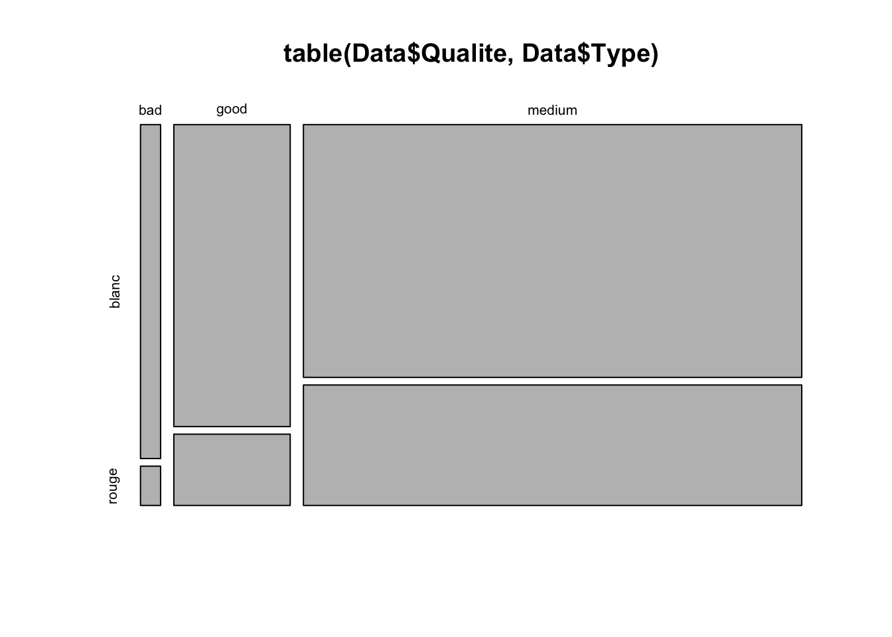
mosaicplot(table(Data$Type,Data$Qualite))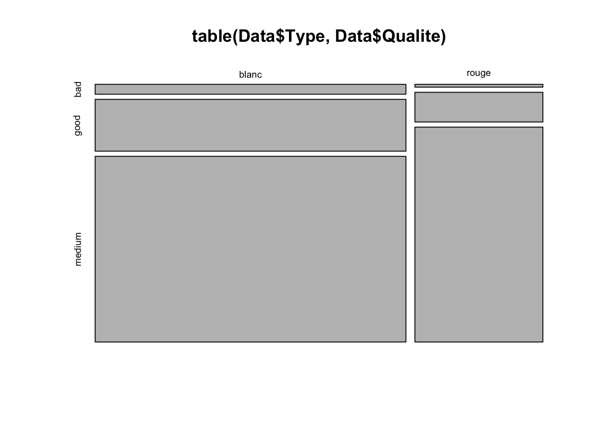
2 Illustration de notions de statistique inférentielle paramétrique dans le cas gaussien
On considère \(\underline{X}=(X_1,\ldots,X_n)\) un \(n\)-échantillon de loi \(\mathcal{N}(m,\sigma^2)\).
2.1 Estimateurs pour \(m\) et \(\sigma^2\)
Pour plusieurs valeurs de \(n\) :
- simulez un \(n\)-échantillon observé \(\underline{x}\) de \(\underline{X}\) de loi \(\mathcal{N}(m,\sigma^2)\) avec \(m=5\) et \(\sigma^2=4\) à l’aide de la fonction
rnorm(). - A partir de \(\underline{x}\), donnez une estimation pour le paramètre de moyenne \(m\) et pour le paramètre de variance \(\sigma^2\).
- Que constatez-vous ?
n=seq(100,10000,100)
mest=NULL
sigma2est=NULL
for (i in 1:length(n)){
x = rnorm(n=n[i],mean=5,sd=2)
mest = c(mest, mean(x))
sigma2est=c(sigma2est, var(x))
}Valeurs obtenues pour l’estimation de \(m\) :
df=data.frame(n=n,mest=mest,sigma2est=sigma2est)
ggplot(df,aes(x=n,y=mest))+
geom_point()+
geom_hline(yintercept=5, color="red")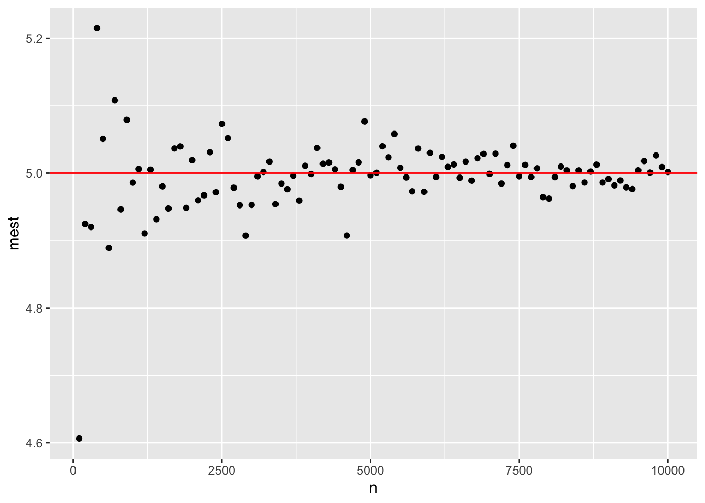
Valeurs obtenues pour l’estimation de \(\sigma^2\) :
ggplot(df,aes(x=n,y=sigma2est))+
geom_point()+
geom_hline(yintercept=4, color="red")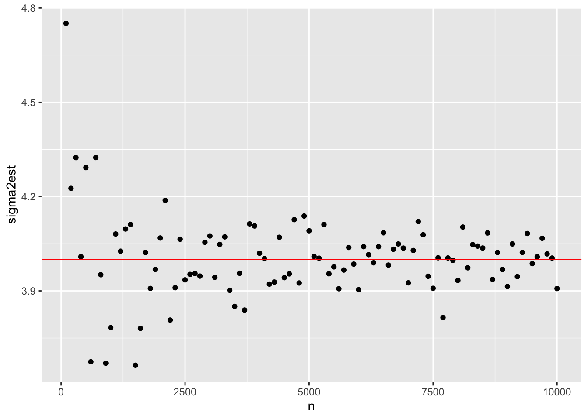
2.2 Intervalle de confiance pour la moyenne \(m\)
2.2.1 Cas de la variance connue
Nous allons tout d’abord nous intéresser à la construction d’un intervalle de confiance pour \(m\) lorsque la variance \(\sigma^2\) est connue, dont la formule est rappelée ici \[ IC_{1-\alpha}(m) = \left[\bar X_n \pm z_{1-\frac{\alpha}{2}} \sqrt{\frac{\sigma^2}{n}}\right] \] où \(z_{1-\frac{\alpha}{2}}\) est le \(1-\frac{\alpha}{2}\)-quantile de la loi normale centrée réduite.
Reportez-vous aux slides de remise à niveau pour vous rappeler la construction.
- Ecrivez une fonction
int.conf.moy1calculant \(IC\) au niveau de confiance niv.conf à partir d’un échantillon observé \(\underline{x}\) et de la valeur de la variance sigma2
int.conf.moy1 <- function(x,niv.conf,sigma2){
alpha = 1-niv.conf
IC = mean(x) + c(-1,1) * qnorm(1-alpha/2) * sqrt(sigma2/length(x))
return(IC)
}- Etudiez le comportement de l’intervalle de confiance en fonction de \(n\) et du niveau de confiance sur données simulées. Pour cela, pour différentes valeurs de \(n\) et niv.conf,
- simulez un échantillon \(x\) de taille \(n\) de v.a. gaussiennes de moyenne \(m=5\) et de variance \(\sigma^2=4\) à l’aide de la fonction
rnorm() - déduisez-en un intervalle de confiance pour \(m\) au niveau de confiance niv.conf à l’aide de la fonction
int.conf.moy1programmée précédemment
n= c(500,1000,5000,10000)
niv.conf = c(0.9,0.95,0.99)
for (i in 1:length(n)){
for (j in 1:length(niv.conf)){
x= rnorm(n[i],mean=5,sd=2)
IC=int.conf.moy1(x,niv.conf[j],sigma2=4)
print(paste("n= ", n[i],", niv.conf= ",niv.conf[j]," : IC vaut [", round(IC[1],3),",",round(IC[2],3),"], il est de longueur",round(IC[2]-IC[1],3), sep=""))
}
}[1] "n= 500, niv.conf= 0.9 : IC vaut [4.985,5.279], il est de longueur0.294"
[1] "n= 500, niv.conf= 0.95 : IC vaut [4.956,5.307], il est de longueur0.351"
[1] "n= 500, niv.conf= 0.99 : IC vaut [4.82,5.281], il est de longueur0.461"
[1] "n= 1000, niv.conf= 0.9 : IC vaut [4.923,5.131], il est de longueur0.208"
[1] "n= 1000, niv.conf= 0.95 : IC vaut [4.88,5.128], il est de longueur0.248"
[1] "n= 1000, niv.conf= 0.99 : IC vaut [4.882,5.208], il est de longueur0.326"
[1] "n= 5000, niv.conf= 0.9 : IC vaut [4.952,5.045], il est de longueur0.093"
[1] "n= 5000, niv.conf= 0.95 : IC vaut [4.901,5.012], il est de longueur0.111"
[1] "n= 5000, niv.conf= 0.99 : IC vaut [4.964,5.11], il est de longueur0.146"
[1] "n= 10000, niv.conf= 0.9 : IC vaut [4.971,5.036], il est de longueur0.066"
[1] "n= 10000, niv.conf= 0.95 : IC vaut [4.924,5.002], il est de longueur0.078"
[1] "n= 10000, niv.conf= 0.99 : IC vaut [4.954,5.057], il est de longueur0.103"- Nous allons ici illustrer le fait que la proportion moyenne de fois où le paramètre \(m\) appartient à l’intervalle de confiance vaut niv.conf.
Pour cela, répétez \(K\) fois l’expérience suivante
- simulez un échantillon \(x\) de taille \(n=1000\) de v.a. gaussiennes de moyenne \(m=5\) et de variance \(\sigma^2=4\) à l’aide de la fonction
rnorm() - déduisez-en un intervalle de confiance pour \(m\) au niveau de confiance niv.conf=0.95 à l’aide de la fonction
int.conf.moy1programmée précédemment - comptabilisez si la vraie valeur de \(m\) appartient à l’intervalle de confiance ou pas
propconf <- function(K,m){
nb.app=0
for (k in 1:K){
x= rnorm(n=1000,mean=m,sd=2)
IC=int.conf.moy1(x,niv.conf=0.95,sigma2=4)
nb.app = nb.app + (m>=IC[1]) * (m<=IC[2])
}
return(nb.app/K)
} Evaluez plusieurs fois pour \(K\) valant \(100\) et \(1000\). Qu’observez-vous ?
nbrep=50
val1=NULL
for (k in 1:nbrep)
val1=c(val1,propconf(K=100,m=5))
val2=NULL
for (k in 1:nbrep)
val2=c(val2,propconf(K=1000,m=5))
df=data.frame(val=c(val1,val2),K=c(rep("K=100",nbrep),rep("K=1000",nbrep)))
ggplot(df,aes(x=K,y=val))+
geom_boxplot()+
geom_hline(yintercept=0.95, color="red")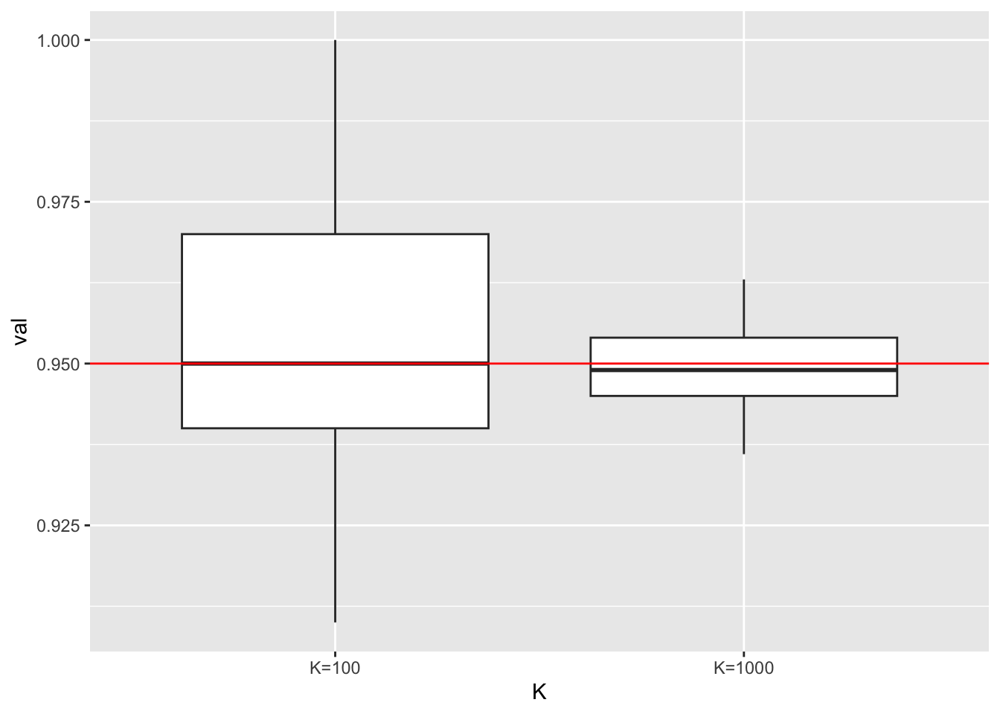
2.2.2 Cas de la variance inconnue
Nous allons maintenant nous intéresser à la construction d’un intervalle de confiance pour \(m\) lorsque la variance \(\sigma^2\) est inconnue, dont la formule est rappelée ici \[ IC_{1-\alpha}(m) = \left[\bar X_n \pm t_{1-\frac{\alpha}{2}} \sqrt{\frac{S^2}{n}}\right] \] où \(t_{1-\frac{\alpha}{2}}\) est le \(1-\frac{\alpha}{2}\)-quantile de la loi de Student à \(n-1\) degrés de liberté et \(S^2\) est l’estimateur de la variance.
Reportez-vous aux slides de remise à niveau pour vous rappeler la construction.
- Ecrivez une fonction
int.conf.moy2calculant \(IC\) au niveau de confiance niv.conf à partir d’un échantillon observé \(\underline{x}\).
int.conf.moy2 <- function(x,niv.conf){
alpha = 1-niv.conf
S2 = var(x)
IC = mean(x) + c(-1,1) * qt(1-alpha/2,length(x)-1) * sqrt(S2/length(x))
return(IC)
}- Etudiez le comportement de l’intervalle de confiance en fonction de \(n\) et du niveau de confiance sur données simulées. Pour cela, pour différentes valeurs de \(n\) et niv.conf,
- simulez un échantillon \(x\) de taille \(n\) de v.a. gaussiennes de moyenne \(m=5\) et de variance \(\sigma^2=4\) à l’aide de la fonction
rnorm() - déduisez-en un intervalle de confiance pour \(m\) au niveau de confiance niv.conf à l’aide de la fonction
int.conf.moy2programmée précédemment
n= c(500,1000,5000,10000)
niv.conf = c(0.9,0.95,0.99)
for (i in 1:length(n)){
for (j in 1:length(niv.conf)){
x= rnorm(n[i],mean=5,sd=2)
IC=int.conf.moy2(x,niv.conf[j])
print(paste("n= ", n[i],", niv.conf= ",niv.conf[j]," : IC vaut [", round(IC[1],3),",",round(IC[2],3),"], il est de longueur",round(IC[2]-IC[1],3), sep=""))
}
}[1] "n= 500, niv.conf= 0.9 : IC vaut [4.989,5.277], il est de longueur0.287"
[1] "n= 500, niv.conf= 0.95 : IC vaut [4.891,5.25], il est de longueur0.359"
[1] "n= 500, niv.conf= 0.99 : IC vaut [4.738,5.188], il est de longueur0.45"
[1] "n= 1000, niv.conf= 0.9 : IC vaut [4.819,5.029], il est de longueur0.21"
[1] "n= 1000, niv.conf= 0.95 : IC vaut [4.83,5.07], il est de longueur0.24"
[1] "n= 1000, niv.conf= 0.99 : IC vaut [4.891,5.213], il est de longueur0.322"
[1] "n= 5000, niv.conf= 0.9 : IC vaut [4.956,5.049], il est de longueur0.093"
[1] "n= 5000, niv.conf= 0.95 : IC vaut [4.905,5.016], il est de longueur0.112"
[1] "n= 5000, niv.conf= 0.99 : IC vaut [4.942,5.087], il est de longueur0.146"
[1] "n= 10000, niv.conf= 0.9 : IC vaut [4.996,5.063], il est de longueur0.067"
[1] "n= 10000, niv.conf= 0.95 : IC vaut [4.972,5.05], il est de longueur0.078"
[1] "n= 10000, niv.conf= 0.99 : IC vaut [4.929,5.033], il est de longueur0.103"- Comparez sur données simulées les intervalles de confiance obtenus dans le cas de la variance connue (
int.conf.moy1), le cas de la variance inconnue (int.conf.moy2) et avec la fonctiont.test()de R.
x = rnorm(n=1000,mean=5,sd=2)
int.conf.moy1(x,niv.conf=0.95,sigma2=4)[1] 4.926437 5.174355int.conf.moy2(x,niv.conf=0.95)[1] 4.927728 5.173063t.test(x,conf.level=0.95)
One Sample t-test
data: x
t = 80.792, df = 999, p-value < 2.2e-16
alternative hypothesis: true mean is not equal to 0
95 percent confidence interval:
4.927728 5.173063
sample estimates:
mean of x
5.050396 2.3 Test sur la moyenne
Considérons \(X_1,\ldots,X_n\) des variables aléatoires i.i.d. de loi \(\mathcal{N}(m,\sigma^2)\) (où \(m\) est inconnue) et soit \(m_0 \in \mathbb{R}\) donnée.
2.3.1 Cas de la variance connue
- Dans les trois tests suivants au niveau \(\alpha\),
- Test 1 : \(\mathcal{H}_0 : m=m_0 \quad \quad \mbox{contre} \quad \quad \mathcal{H}_1^+ : m> m_0\)
- Test 2 : \(\mathcal{H}_0 : m=m_0 \quad \quad \mbox{contre} \quad \quad \mathcal{H}_1^{-} : m< m_0\)
- Test 3 : \(\mathcal{H}_0 : m=m_0 \quad \quad \mbox{contre} \quad \quad \mathcal{H}_1 : m\neq m_0\)
précisez
- la statistique de test et sa loi sous \(\mathcal{H}_0\)
- la forme de la zone de rejet
- l’expression de la pvaleur en fonction de \(\phi\) qui désigne la fonction de répartition d’une \(\mathcal{N}(0,1)\)
- Complétez la fonction suivante
test.moy1()qui évalue la p-valeur du test \(\mathcal{H}_0 : m=m_0\) contre l’alternative
two.sidedpour le test bilatéral avec \(\mathcal{H}_1 : m\neq m_0\)greaterpour le test unilatéral avec \(\mathcal{H}_1 : m> m_0\)lesspour le test unilatéral avec \(\mathcal{H}_1 : m < m_0\)
à partir d’un échantillon observé \(\underline{x}\) (supposé gaussien) et la valeur de la variance \(\sigma^2\). Vous pourrez vous aider de la fonction pnorm().
test.moy1 <- function(x,sigma2,m0,alternative="greater"){
Zn.obs = sqrt(length(x))*(mean(x)-m0)/sqrt(sigma2)
if(alternative=="two.sided"){
pval = 2*(1-pnorm(abs(Zn.obs)))
}else{
if(alternative=="greater"){
pval = 1-pnorm(Zn.obs)
}else{
if(alternative=="less"){
pval = pnorm(Zn.obs)
}
}
}
return(pval)
}- Afin d’estimer la taille du test, complétez la fonction
estim.prop.test.moy1()qui estime la proportion moyenne de fois où le test rejette l’hypothèse nulle \(\mathcal{H_0}\). Pour cela, répétez \(K\) fois l’expérience suivante
- simulez un échantillon \(x\) de taille \(n=1000\) de v.a. gaussiennes de moyenne \(m=5\) et de variance \(\sigma^2=4\) à l’aide de la fonction
rnorm() - calculez la p-valeur obtenue avec la fonction
test.moy1programmée précédemment pour le test \(\mathcal{H}_0: m=5\) contre \(\mathcal{H}_1^+: m>5\).
- comptabilisez si l’hypothèse nulle est rejetée au niveau \(\alpha = 5\%\).
estim.prop.test.moy1 <-function(n=1000,m=5,sigma2=4,m0=5,alpha=0.05,K=100,alternative="greater"){
nb.rejets=0
for(k in 1:K){
x=rnorm(n,m,sqrt(sigma2))
pval=test.moy1(x,sigma2,m0,alternative)
nb.rejets = nb.rejets + (pval<=alpha)
}
return(nb.rejets/K)
}Qu’observez-vous ? Répétez cette étape plusieurs fois pour \(K=100\) et \(K=1000\), que remarquez-vous ?
nbrep=50
val1=NULL
for (k in 1:nbrep)
val1=c(val1,estim.prop.test.moy1(n=1000,m=5,sigma2=4,m0=5,alpha=0.05,K=100,alternative="greater"))
val2=NULL
for (k in 1:nbrep)
val2=c(val2,estim.prop.test.moy1(n=1000,m=5,sigma2=4,m0=5,alpha=0.05,K=1000,alternative="greater"))
df=data.frame(val=c(val1,val2),K=c(rep("K=100",nbrep),rep("K=1000",nbrep)))
ggplot(df,aes(x=K,y=val))+
geom_boxplot()+
geom_hline(yintercept=0.05, color="red")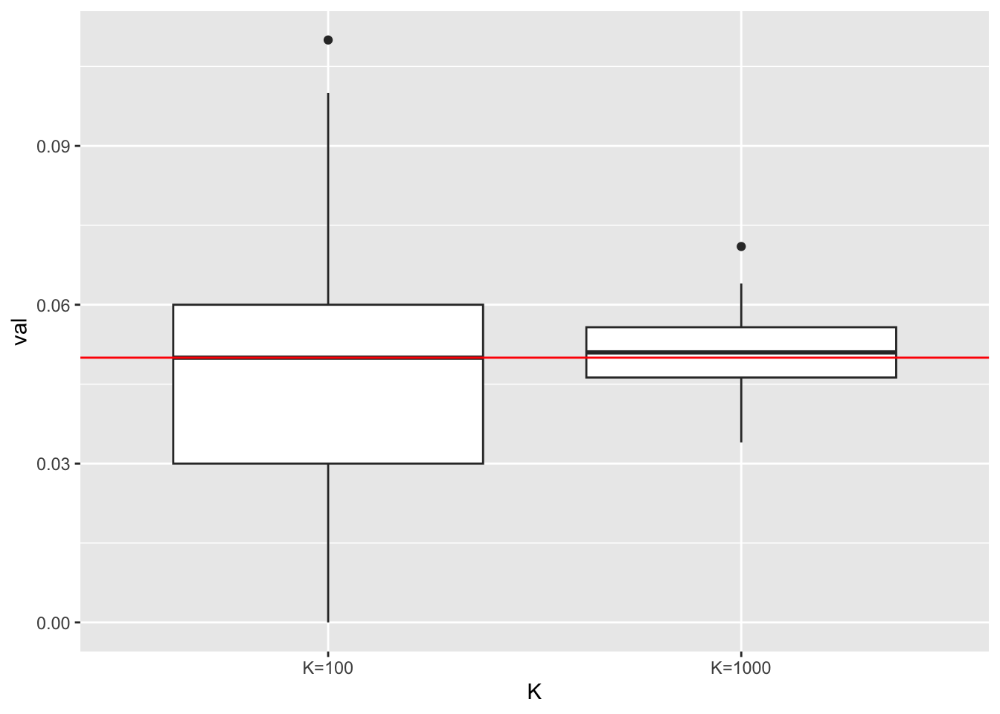
- Etude de la puissance du test \(\mathcal{H}_0: m=m_0\) contre \(\mathcal{H}_1^+: m>m_0\)
- Montrez que la puissance théorique du test est donnée par l’expression suivante \[ \Pi: \theta\in ]m_0,+\infty[ \mapsto 1 - \Phi\left(z_{1-\alpha} - \sqrt{n}\ \frac{\theta - m_0}{\sigma}\right) \] où \(z_{1-\alpha}\) est le (1-)-quantile de la loi normale \(\mathcal{N}(0,1)\) et \(\Phi\) est la fonction de répartition de la loi normale \(\mathcal{N}(0,1)\).
Créez une fonction puiss.test.moy.1() pour calculer cette fonction puissance.
puiss.test.moy.1 <- function(n=1000,sigma2=4,m0=5,alpha=0.05,mmax){
theta = seq(m0,mmax,0.01)
puiss = 1 - pnorm(qnorm(1-alpha) - (sqrt(n/sigma2)*(theta-m0)))
return(puiss)
}A l’aide de la fonction puiss.test.moy.1(), tracez sur un même graphique la fonction puissance en faisant varier le niveau \(\alpha\) du test (\(1\%\), \(5\%\), \(10\%\)) et commentez.
mmax=6
theta=seq(5,mmax,0.01)
df = data.frame(puiss = c(puiss.test.moy.1(n=1000,sigma2=4,m0=5,alpha=0.01,mmax),puiss.test.moy.1(n=1000,sigma2=4,m0=5,alpha=0.05,mmax),puiss.test.moy.1(n=1000,sigma2=4,m0=5,alpha=0.1,mmax)),
alpha=c(rep("0.01",length(theta)),rep("0.05",length(theta)),rep("0.1",length(theta))),
theta=rep(theta,3))
ggplot(df,aes(x=theta,y=puiss,colour=alpha))+
geom_line()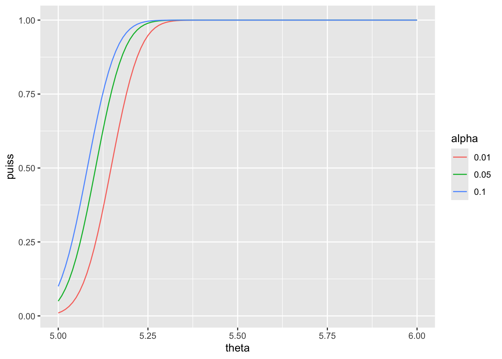
A l’aide de la fonction puiss.test.moy.1(), tracez sur un même graphique la fonction puissance en faisant varier la taille de l’échantillon \(n\) et commentez.
mmax=6.5
theta=seq(5,mmax,0.01)
df = data.frame(puiss = c(puiss.test.moy.1(n=100,sigma2=4,m0=5,alpha=0.05,mmax),puiss.test.moy.1(n=500,sigma2=4,m0=5,alpha=0.05,mmax),puiss.test.moy.1(n=1000,sigma2=4,m0=5,alpha=0.05,mmax)),
n=c(rep("100",length(theta)),rep("500",length(theta)),rep("1000",length(theta))),
theta=rep(theta,3))
ggplot(df,aes(x=theta,y=puiss,colour=n))+
geom_line()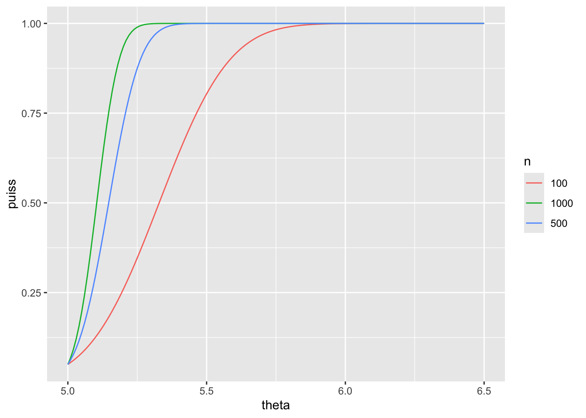
2.3.2 Cas de la variance inconnue
On suppose maintenant que la variance \(\sigma^2\) est inconnue et on s’intéresse uniquement au Test 1 \[ \mathcal{H}_0 : m=m_0 \quad \quad \mbox{contre} \quad \quad \mathcal{H}_1^+ : m> m_0 \] 1. Rappelez la statistique de test, la loi sous \(\mathcal{H}_0\) et la forme de la zone de rejet pour le test 1 quand la variance est inconnue
- Construisez une fonction
test.moy2()pour évaluer la pvaleur du test à partir d’un échantillon observé \(\underline{x}\). Vous pourrez vous aider de la fonctionpt()pour la fonction de répartiion d’une loi de Student.
test.moy2 <- function(x,m0){
Tn_obs = sqrt(length(x))*(mean(x)-m0)/sqrt(var(x))
pval = 1-pt(Tn_obs,df=length(x)-1)
return(pval)
}- Comparez la pvaleur obtenue avec
test.moy2()et la sortie det.test()de R sur des données simulées.
x = rnorm(n=1000,mean =5,sd=2)
test.moy2(x,m0=5)[1] 0.7123989t.test (x,mu=5,alternative="greater")
One Sample t-test
data: x
t = -0.56059, df = 999, p-value = 0.7124
alternative hypothesis: true mean is greater than 5
95 percent confidence interval:
4.858467 Inf
sample estimates:
mean of x
4.964049